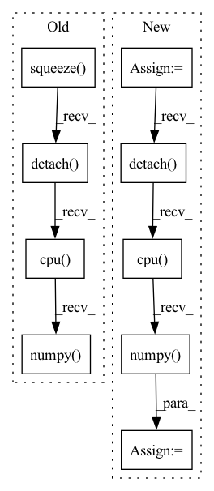

Pattern ID :15830
Before Change
for data in test_loader:
x = data[0].squeeze(0).squeeze(0).detach().cpu().numpy()
y = data[1].squeeze(0).squeeze(0).detach().cpu().numpy()
x_seg = data[2].squeeze(0).squeeze(0).detach().cpu().numpy()
y_seg = data[3].squeeze(0).squeeze(0).detach().cpu().numpy()
x = ants.from_numpy(x)
y = ants.from_numpy(y)
After Change
x_seg_oh = nn.functional.one_hot(x_seg.long(), num_classes=46)
x_seg_oh = torch.squeeze(x_seg_oh, 1)
x_seg_oh = x_seg_oh.permute(0, 4, 1, 2, 3).contiguous()
x_seg_oh = x_seg_oh.squeeze(0).detach() .cpu().numpy()
y_seg = data[3].squeeze(0).squeeze(0).detach().cpu().numpy()
In pattern: SUPERPATTERN
Frequency: 3
Non-data size: 9
Instances Fragment ID: 53598576
Project Name: junyuchen245/transmorph_transformer_for_medical_image_registration
Commit Name: 0612d1a704653ff98a92a228ecaefd2023577062
Time: 2022-09-07
Author: jchen245@jhmi.edu
File Name: IXI/Baseline_traditional_methods/SyN/infer_IXI.py
M Class Name: AnonimousClass
N Class Name: AnonimousClass
M Method Name: main(0)
N Method Name: main(0)
M Parent Class:
N Parent Class:
M File Name: IXI/Baseline_traditional_methods/SyN/infer_IXI.py
N File Name: IXI/Baseline_traditional_methods/SyN/infer_IXI.py
M Start Line: 57
M End Line: 86
N Start Line: 58
N End Line: 96
Before Change
pred = model(
torch.autograd.Variable(batch).to(device), lengths.cpu().numpy()
) //// perform forward pass
pred = torch.squeeze( pred)
loss = criterion(
pred.to(device), torch.autograd.Variable(targets.float()).to(device)
) //// compute loss
loss.backward() //// perform backward pass
optimizer.step() //// update weights
pred_val = pred >= 0.5 //// get predictions
y_true += list(targets.int().numpy()) //// accumulate targets from batch
y_pred += list(
pred_val.data.int().detach().cpu().numpy()
) //// accumulate preds from batch
total_loss += loss //// accumulate train loss
acc = accuracy_score(After Change
model.zero_grad()
//// perform forward pass
pred = model(
sent1.to(device),
sent2.to(device),
sents1_len.to(device),
sents2_len.to(device),
)
//// compute loss
loss = criterion(
pred.to(device), torch.autograd.Variable(targets.float()).to(device)
)
//// perform backward pass
loss.backward()
//// update weights
optimizer.step()
//// accumulate targets from batch
y_true += list(targets.float().numpy())
//// accumulate preds from batch
y_pred += list(pred.data.float().detach().cpu().numpy() )
//// accumulate train loss
total_loss += loss Fragment ID: 53598547
Project Name: shahrukhx01/siamese-nn-semantic-text-similarity
Commit Name: f3d054dd14ef532c408b1306c3341115777ac22f
Time: 2021-12-30
Author: sk28671@gmail.com
File Name: siamese_sts/trainer/train.py
M Class Name: AnonimousClass
N Class Name: AnonimousClass
M Method Name: train_model(6)
N Method Name: train_model(6)
M Parent Class:
N Parent Class:
M File Name: siamese_sts/trainer/train.py
N File Name: siamese_sts/trainer/train.py
M Start Line: 16
M End Line: 47
N Start Line: 16
N End Line: 59
Before Change
// Draw keypoint matches
src = out["src_rc"][-1].squeeze().detach().cpu().numpy()
tgt = out["tgt_rc"][-1].squeeze().detach().cpu().numpy()
match_weights = np.exp(out["match_weights"][-1].squeeze().detach().cpu().numpy() )
keypoint_ints = out["keypoint_ints"]
ids = torch.nonzero(keypoint_ints[-1, 0] > 0, as_tuple=False).squeeze(1)After Change
// Draw scores
scores = out["scores"][-1]
if scores.size(0) == 3:
scores = scores[1] + scores[2]
scores = scores.squeeze().detach() .cpu().numpy()
plt.imshow(scores, cmap="inferno")
plt.colorbar()
plt.title("log det weight (weight score vis)")
score_img = convert_plt_to_tensor() Fragment ID: 53598581
Project Name: utiasasrl/hero_radar_odometry
Commit Name: c1043c84c77f1a20b667d981d4cd286cb378c71a
Time: 2021-01-25
Author: david.yoon@robotics.utias.utoronto.ca
File Name: utils/vis.py
M Class Name: AnonimousClass
N Class Name: AnonimousClass
M Method Name: draw_batch_steam(3)
N Method Name: draw_batch_steam(3)
M Parent Class:
N Parent Class:
M File Name: utils/vis.py
N File Name: utils/vis.py
M Start Line: 55
M End Line: 134
N Start Line: 95
N End Line: 122